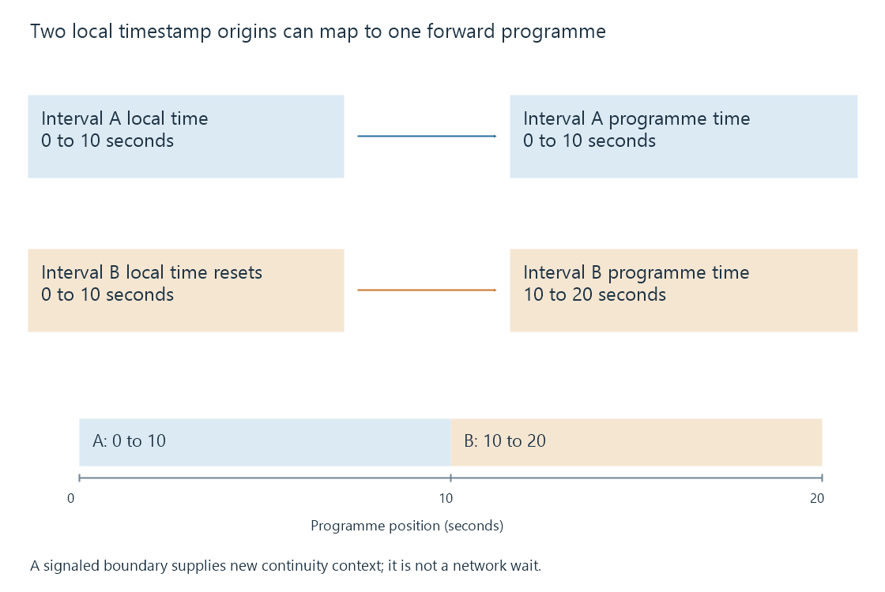

Stream discontinuities and timeline changes
A stream discontinuity marks a change in media timing or configuration that requires the player to interpret the following interval in a new continuity context.
A stream discontinuity marks a boundary where the following media needs a changed interpretation. Its timestamp sequence, track configuration or other properties may differ from what preceded it.
A network delay between continuous segments is a delivery problem. A discontinuity can instead be intentional programme structure, such as switching sources or inserting another sequence.
A local timestamp can restart at a continuous programme position
Consider two original ten-second intervals:
| Interval | Local sample-time range | Intended programme range |
|---|---|---|
| A | 0–10 seconds | 0–10 seconds |
| B | 0–10 seconds after a timestamp reset | 10–20 seconds |
If the player interpreted B using A's unchanged local-time mapping, B's samples would appear to return to programme time zero. The intended programme continues forward.
A selected HLS media-playlist excerpt can mark that boundary:
#EXTINF:10.000,
a.ts
#EXT-X-DISCONTINUITY
#EXTINF:10.000,
b.ts
This is an original boundary illustration, not a complete playlist or generated pair of media files. HLS requires discontinuity signaling for specified changes, including the timestamp sequence.

The marker tells the client that the previous continuity assumptions no longer suffice. It does not give an instruction to display duplicate pictures or erase ten seconds of programme time.
Configuration can change at the same boundary
A transition can also involve different track identifiers, encoded configuration or packaging context. The player may need new initialization or decoder preparation.
For example, switching from one input source to another can introduce a timestamp reset and different codec parameters. The client must know both how to interpret the new sample timing and how to prepare the encoded samples.
A valid marker alone does not guarantee seamless operation. The new representation still needs to be supported, correctly described and available early enough. A gap in intended programme coverage remains a gap even when the boundary is signaled.
In DASH, Period boundaries provide presentation context for changes. Period timing and cross-period continuity have their own model; a new Period should not be treated as a literal spelling variant of an HLS tag.
Wall-clock time is another mapping
Programme continuity does not imply continuity of raw sample timestamps, and neither directly gives the clock time at which the event occurred.
A publication can provide a programme-to-wall-clock relationship. That helps compare captures, live delay or parallel tracks. A timestamp reset then needs the correct context to keep those relationships meaningful.
If a log prints sample time zero twice, identifying the continuity context can explain why the second zero belongs later in the programme. Subtracting the values without that context would report an apparent backward jump.
Rolling playlists need the retained context
Imagine a live playlist with a discontinuity before segment 200. A later window begins at 201, after the segment carrying the marker has left the list.
The client still needs to distinguish this continuity context from an earlier one. HLS uses EXT-X-DISCONTINUITY-SEQUENCE to retain the relevant sequence context as older discontinuity tags leave a rolling playlist.
That value is separate from EXT-X-MEDIA-SEQUENCE, which identifies the first media segment's sequence number. Their roles should not be combined into one “stream position” counter.
Relate the observation to the boundary
| Observation | Interpretation to investigate |
|---|---|
| Media sample timestamps reset at a signaled boundary | Changed continuity context |
| A request takes longer, with otherwise continuous media | Delivery timing and reserve |
| New initialization or codec parameters appear | Configuration transition |
| The intended programme ranges leave a hole | Missing programme coverage |
| Presentation resumes after decoder preparation | Receiver handling of the transition |
In Emby, a seek or new conversion job can also restart an output timestamp origin. Relating playback information and conversion logs to the affected job distinguishes a new output origin from a fault in one continuous media sequence.
See Also
- HLS playlists: variants, media order and live windows
- MPEG-DASH and its media presentation description
- HLS media segments and initialization
- Packet Timestamps
- Playback stalls and unavailable next media
- Seeking during streaming